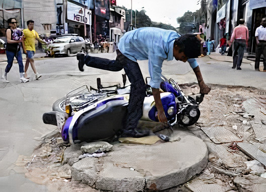
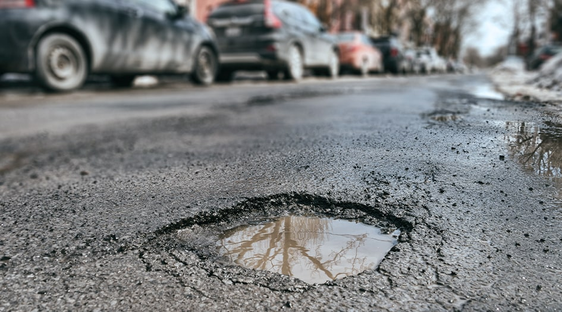

ABOUT
The idea behind this website is to help people so that they never suffer accidents due to potholes.
Whenever a person will see a pothole on the road, he/she can upload the image and our Deep Learning
model will detect the potholes on it and if there is pothole on the road then the image can be send
to State Public Works Department (PWD) so that they can repair potholes the road and avoid accidents.
YOLO ALGORITHM
We present YOLO(You Look Only Once), an object detection algorithm.
Prior work on object detection repurposes classifiers to perform detection.Our unified architecture
is extremely fast. Our base YOLO model processes images in real-time at 45 frames per second.
A smaller version of the network, Fast YOLO, processes an astounding 155 frames per second while
still achieving double the mAP of other real-time detectors. Finally, YOLO learns very general
representations of objects. It outperforms other detection methods, including DPM and R-CNN,
when generalizing from natural images to other domains like artwork.
APPLICATIONS
For Detecting the Damaged Road - The road condition is totally unmotorable
after the rain.The innumerable potholes on the road stretches hardly leave any space for manoeuvring.
Apart from the physical discomfort to drivers, vehicles also take a beating.
Due to which an accident appears imminent due the enforcement of the traffic diversion.
We can use the Road Damage Detection and identify the Damaged Roads in an area, an inform the
Municipality about the Damaged Roads so that they can fix it as soon as possible.
Can be used in Self-Driving Cars - A self-driving car also known as an autonomous vehicle (AV),
connected and autonomous vehicle (CAV), full self-driving car or driverless car, or robo-car
or robotic car,(automated vehicles and fully automated vehicles in the European Union) is a
vehicle that is capable of sensing its environment and moving safely with little or no human input.
Road Damage Detection can help the self-driving car to drive carefully and alert the driver
about that the road is damage and depending upon the conditions driver can takethe actions immediately.
We can create a App which can record videos, and if it detects some potholes then it can directly send the image and location
to PWD, therefore user doesn't have to expliclity take images and tell the location.


LIMITATION OF YOLO
YOLO imposes strong spatial constraints on bounding
box predictions since each grid cell only predicts two boxes
and can only have one class. This spatial constraint lim-
its the number of nearby objects that our model can pre-
dict. Our model struggles with small objects that appear in
groups, such as very small cracks on roads.